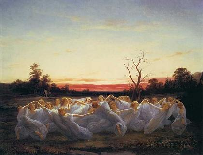
La Villemarqué et les littératures scandinavesCette ballade est citée par La Villemarqué dans les notes qui suivent "Le seigneur Nann" dans les 3 éditions principales du "Barzhaz Breizh". Les deux sources qu'il indique sont les "Svenska Folk Visor från Forntiden" (Airs populaires suédois d'autrefois) de Erik-Gustaf Geijer et Arvid-August Afzelius, parus à Stockholm en 1816 (volume III, pp.158 et 162), ainsi que les "Udvalgte Danske Viser" (Airs danois choisis") de Werner Abrahamson, Rasmus Nyerup et Knud Lyne Rahbek, publiés à Copenhague en 1812-1814 (Volume I, p.237).La seconde référence se rapporte en réalité à un autre chant "Elveskud", dont il sera question plus loin. Avec ces références scandinaves, La Villemarqué fait preuve d'une érudition hors du commun. Francis Gourvil écrit dans son "La Villemarqué" (p.415): "Initié probablement par les ouvrages de Xavier Marmier aux littératures scandinaves, La Villemarqué connut l'existence du thème de la fée dédaignée, où les elfes et un certain sire Olaf interviennent à la place de la Korrigane bretonne et du Seigneur Nann. Cela lui permit de citer les "Svenska Visor" et les "Danske Viser" dont les textes originaux lui étaient évidemment inaccessibles, de donner une haute idée de ses connaissances universelles et de flatter en même temps les savants nordiques appelés à connaître l'ouvrage". Même si l'on ne fait pas siennes ces considérations mesquines, on est effectivement intrigué. R.C.A. Prior, dans la Préface de ses "Ancient Danish Ballads" (Volume 1 p. XXIV), confirme qu'à la parution de son ouvrage, en 1860, les pièces danoises qu'il présentait n'avaient été traduites, hormis vers d'autres langues nordiques, qu'en allemand par Herder dans son "Essai sur les chants populaires", W. Grimm en 1813, pour 99 d'entre elles, ("Altdänische Heldenlieder") et par Talvj ("Charakteristik der Volkslieder"). La seule traduction française qu'il connût était la version en prose par X. Marmier de quelques unes d'entre elles, dont deux citées dans le Barzhaz Breizh de La Villemarqué. Xavier Marmier (1808 - 1892), homme de lettres né à Pontarlier, enseigna brièvement la littérature étrangère à Rennes. Ce n'est qu'en 1839, l'année où parut le premier Barzhaz, qu'il publia son "Histoire de la littérature en Danemark et en Suède" (source: Wikipédia). On est tout autant étonné de la connaissance qu'a La Villemarqué de "Marko et la Fée", donné par la Bibliothèque Nationale Digitale de Serbie comme un manuscrit non publié à ce jour. Ces références auront permis au Barde de Nizon d'être le premier à faire le lien entre la "gwerz" bretonne, la complainte française du roi Renaud et la ballade scandinave, ainsi qu'avec la "pesma" serbe, même si le rapprochement qu'il suggère semble moins pertinent. |
La Villemarqué and Scandinavian literaturesThis ballad is quoted by La Villemarqué in the notes following "Sir Nann" in the 3 main releases of "Barzhaz Breizh". The two sources he mentions are the "Svenska Folk Visor från Forntiden" (Swedish folk songs from bygone days) by Erik-Gustaf Geijer and Arvid-August Afzelius, published in Stockholm in 1816 (volume III, pp.158 and 162), as well as the " "Udvalgte Danske Viser" (Selected Danish Airs) by Werner Abrahamson, Rasmus Nyerup and Knud Lyne Rahbek, published in Copenhagen in 1812-1814 (Volume I, p.237). The latter title in fact refers to another song "Elveskud", which will be addressed further below.With these Scandinavian references, La Villemarqué displayed outstanding erudition. Francis Gourvil wrote in his "La Villemarqué" (p.415): "Probably informed by the works of Xavier Marmier of the Scandinavian literatures, La Villemarqué heard of the story of the despised fairy, where the protagonists are elves and a named Sir Olav instead of the Breton korriganess and Sir Nann. So he felt called upon to quote the "Svenska Visor" and the "Danske Viser" whose original versions he certainly could not construe. This allowed him to boast universal knowledge and to flatter the Nordic scientists who would read his book." Even if one does not share in these sarcastic considerations, one cannot but be puzzled by these references. R.C.A. Prior, in the Preface to his "Ancient Danish Ballads" (Volume 1 p. XXIV), confirms that, when his book was published in 1860, most Danish songs were not yet translated, except into other Nordic languages and into German by Herder in his "Essay on Folk Songs" and by Wilhelm Grimm who translated 99 of them, in 1813, in his "Altdänische Heldenlieder" and by Talvj in her "Charakteristik der Volkslieder". The only French translation he knew of was a prose version composed by X. Marmier of a few of them , two of them were quoted by La Villemarqué. Xavier Marmier (1808 - 1892), a writer born in Pontarlier, taught for a short period foreign literature at Rennes University. Not until 1839, the year when the first Barzhaz was printed, did he publish his "History of literature in Denmark and Sweden" (source: Wikipedia). Also very surprising is La Villemarqué's acquaintance with "Marko and the Fairy" which the Digital National Library of Serbia presents as a hitherto unpublished manuscript. These references make of the Bard of Nizon the first critic who hinted at the existing link between the Breton "gwerz", the French lament of "King Renaud" and the Scandinavian "vise", as well as with the Serbian "pesma", though the parallel seems less pertinent. |
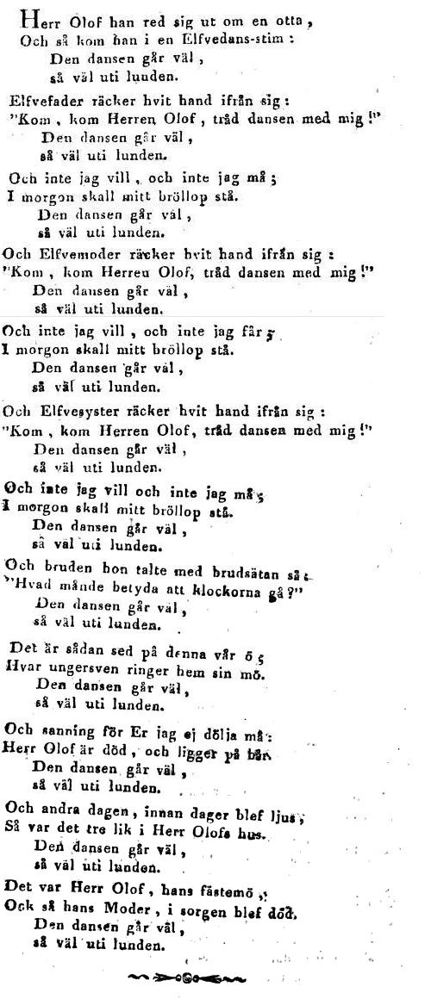 |
|
|
Une référence légendaire et historiqueCette pièce, bien que connue également au Danemark, a pour héros éponyme le fils du roi de Suède Gustave I (1496 - 1523 - 1560), le Prince Magnus, Duc de Gothie Orientale (1542 -1595) qui devint fou. Un jour il se jeta dans la mer depuis le fenêtre de son château. Il revint trempé, mais indemne parce que, disait-il, la jolie sirène qui lui avait fait signe l'avait rattrapé dans ses bras.Dans la version notée dans le Småland que l'on va lire, seuls sont cités les passages mentionnés par La Villemarqué dans ses "notes" à propos du chant breton "le Seigneur Nann". On voit comment une elfe qui voulait à toute force convoler avec le prince, après lui avoir promis mille richesses, le menace de lui ôter la raison s'il refuse ses avances. Dans une autre variante (les "Svenska Folk Visor" en reproduisent cinq, pp.168 à 180), Magnus est réveillé par le chant du coq qui met fin au sortilège. Dans une variante danoise citée par Richard Prior dans ses "Ancient Danish Ballads" (N°156, page 343), la fée, après avoir été hachée menu par la précieuse épée du jeune homme qu'elle tentait de retenir, se transforme en un feu ardent qui fait trembler les plus gros arbres de la forêt... Dans les versions dont le héros est le Prince Magnus, il n'est pas question de la danse des Elfes, un élément qui se retrouve lui aussi dans l'imaginaire bas-breton cf. Les nains, "La Chanson des nains". |
A legendary and historical referenceThough the piece below is well known also in Denmark, its eponymous hero is a son to the king of Sweden, Gustave I (1496-1523), Prince Magnus, Duke of East-Gothland (1542 - 1595) who became insane. One day he threw himself into the sea out of a window of his castle. He came back soaked to the skin, but unscathed, since, so he said, the pretty mermaid who had beckoned to him had caught him in her arms.In the present version, collected in Småland, only the sentences quoted by La Villemarqué in his "notes" to the Breton ballad "Sir Nann" are set forth. It recounts how an elf maid who wanted by all means to marry the Prince, since her offering him all sorts of precious gifts proved to be in vain, threatened him to make of him a madman, if he should persist in refusing her advances. In another variant (the "Svenska Folk Visor" include five of them on pp. 168 to 180), Magnus is waked up by the crowing of a cock that puts an end to the devilry. In a Danish variant quoted by Alexander Prior in his "Ancient Danish Ballads" (N°156, page 343), the fairy, after she was chopped to small pieces by the golden sword of the swain she wanted to seduce, turns herself to a blazing fire that makes tremble and quake the mightiest forest trees... In the versions where the hero is Prince Magnus the dance with the elves plays no part. And yet it is an element that is also encountered in the Breton fictions, for instance in The Dwarves, "The song of the Dwarves". |
1. Hertig Magnus, trolofven J mig! |
1. - Prends-moi pour ton épouse ; |
1. Plight thy troth to me |
Eine wichtige Quelle der deutschen und skandinavischen LiteraturDer zweite Hinweis betreffend "Herr Olaf" in La Villemarqué's "Noten" zu dem Barzhaz-Lied "Herr Nann" bezieht sich auf das erste nachstehende Stück. Diese Ballade wurde 1812 in den "Udvalgte Danske Viser fra Middelalderen" (Ausgewählte dänische Weisen aus dem Mittelalter) von Abrahamson, Nyerup und Rahbek unter dem Titel "Elfeskud" (Elfenstoss) veröffentlicht.Diese Version von "Herr Olaf" war bestimmt, eine entscheidende Rolle in der Literaturgeschichte zu spielen. Johann Gottfried von Herder (1744 -1803) erstellte eine deutsche Übertragung dieses Lieds, das ihm durch die 1695 erschienene "Samling af danske Kæmpeviser" (Sammlung von Dänischen Heldenliedern) von Peder Syv vermutlich bekannt war. Herder veröffentlichte seine Übersetzung im Jahre 1778 in seinen "Volksliedern nebst untermischten anderen Stücken", die in der postumen Ausgabe von 1807 auf ""Stimmen der Völker in Liedern" umgetauft wurden. Sie war eine Inspirationsquelle für eine ganze Generation von romantischen Schriftstellern in Europa,, insbesondere für einen gewissen Goethe. Das Buch von Peter Syv war in Wirklichkeit die Neuausgabe eines um hundert Lieder bereicherten, früheren Werks von Pastor Sørensen Vedel, dessen "Danske Viser", wie er selber schrieb, "zur harmlosen Kurzweil seiner Leser" 1591 veröffentlicht wurden. Der Pastor war der erste in Nordeuropa, der ein solches Kompendium zusammenstellte. Er ließ es auf Begehren der Königin Sophia, Gattin von König Friedrich II drucken. Im 19. Jahrhundert entdeckten Svend Grundtvig (1824-1883) und andere Forscher ältere Exemplare von den gleichen Stücken (im vorliegenden Fall, 1550!) und stellten fest, dass Vedel in vielen Fällen unzulässige Änderungen vorgenommen hatte. Um dem Geschmack des Publikums zu entsprechen hatte er oftmals Fantastisches in nüchterne Berichte hineingeflochten. Verschiedene Schriftsteller (Ingemann, Ochsenschläger...) bezogen sich auf diese Balladen in ihren Werken, sodass die dänische Literatur von der abgeschmackten, damals allgemein grassierenden klassischen Mythologie weitgehend verschont blieb. [1] Dem deutschen Titel zufolge geht es in diesem Lied um die "Tochter des Erlenkönigs". Wie es zu der Fehlübersetzung von "Elfkönig" als "Erlkönig" kam, ist unklar. Der Ursprung ist möglicherweise in der dänischen Sprache zu suchen, in der "ellerkonge" die dialektale Form für "elverkonge" ist, wobei "ellertrae" z.B. "Erlbaum" heißt. Goethe hat absichtlich sein Gedicht "Erlkönig" getitelt. Die Vorstellung, dass übernatürliche Wesen sich an Menschen manchmal vergreifen, könnte aber weiter zurückgehen: im 16. Jahrhundert erschien das Wort "Hexenschuss". Nach dem Volksglauben beruht die Krankheit "Lumbago" auf dem Schuss einer Hexe. Diese Vorstellung könnte viel älter sein: "haegtessan" bzw. "ylfa gescot" (Hexen- bzw. Elfenschuss) sind schon im Altenglischen bezeugt. [2] Die an zweiter Stelle nachstehende, jedoch ältere Version desselben Lieds beginnt mit: "Herr Oluf reitet in Richtung des Berges. Da geht ein Tanz von Zwergen herum." Bemerkenswert ist, dass "Korrigan" nach La Villemarqué's Meinung von "korr"="Zwerg" kommt. [3] La Villemarqué behauptet, es gäbe zumindest 15 Versionen von diesem Lied. Hiermit wird man aber bei weitem nicht der Sache gerecht: dieses Lied gibt es in endlosen Variationen, die sich in drei Gruppen aufteilen lassen: skandinavische, bretonische und französische Versionen. Auf der Site der Universitäten von Montréal, Laval and von Québec in Montréal ist ein Artikel von Donatien Laurent zum Thema: "Rolle der Sprachgrenzgebiete in der Verbreitung der traditionellen Volkslieder, mit Anmerkungen über die bretonischen Versionen von 'König Renault". Dort heißt es, dass fast soviele Varianten von diesem Lied in besagter Provinz vorhanden sind, wie in den beiden übrigen Gebieten (Skandinavien und Innen-Frankreich) zusammen. Nun hat der Volkskundler Sven Hersleb Grundtvig (1824-1883) 64 seit dem 16. Jahrhundert entstandene, skandinavische Versionen gesammelt (Island:12, Dänemark: 26, Schweden:8, Norwegen:18), während George Doncieux (1856 - 1903) die Anzahl der französischen bzw. französisch-ähnlichen Versionen desselben Lieds auf etwa 70 schätzte. [4] Nachstehend einige skandinavische Versionen, eingesandt von Herrn Padrig Kobis. Besonders bemerkenswert ist die älteste dänische Version (Elverskud II, 1550), die Themen enthält, die in vielen anderen skandinavischen und europäischen Versionen auch vorkommen: unheimliches Tageslicht schon vor Sonnenaufgang; Tanz der übernatürlichen Wesen; der Ritter wird zur Teilnahme an dem Tanz von einem Fee-Mädchen aufgefordert, bevor es ihn zu seiner Geliebten weiterreiten lässt; kostbare Geschenke werden ihm von der Fee angeboten, falls er sich bereit erklärt, mit ihr zu tanzen: ein magisches Pferd, ein Sattel, eine Brünne, ein Schwert; seine Widerspenstigkeit wird durch den "Elfenschlag" grausam bestraft; die Frage der um die Erhaltung des Adelgeschlechtes besorgten Mutter: "Welchem deiner Brüder schenkst du deine Braut"; während des Brautzugs und der Vorbereitung der angeblichen Trauung vernimmt das unglückselige Mädchen ominösen Zeichen (Trauergeläute der Glocken, Tränen der Frauen, Fernbleiben des Bräutigams...); ihre Fragen werden ausweichend beantwortet; der tote Ritter wird entdeckt und seine Braut stirbt sodann. |
Une source importante des littératures scandinaves et allemandeLa seconde référence relative à Sire Olaf indiquée par La Villemarqué dans les "notes" qui font suite au chant "Le seigneur Nann" du Barzhaz se rapporte à la première des deux versions du chant ci-après. Il s'agit d'une ballade publiée en 1812, dans les "Udvalgte Danske Viser fra Middelalderen" (Florilège d'airs danois du moyen-âge) d'Abrahamson, Nyerup et Rahbek, sous le titre "Elfeskud" (Le coup porté par l'Elfe).Cette version de "Sire Olaf" joue un rôle capital dans l'histoire de la littérature. Johann Gottfried von Herder (1744 -1803) fit une version allemande de cette ballade qu'il connaissait sans doute par le "Samling af danske Kæmpeviser" (Recueil de chants héroïques danois) de Peder Syv paru en 1695. Herder publia sa traduction en 1778 dans ses "Volkslieder nebst untermischten anderen Stücken" (Chants populaires et autres pièces diverses) qui deviendront, dans l'édition posthume de 1807, "Stimmen der Völker in Liedern" (Les chants, cette voix des peuples). Elle allait inspirer toute une génération d'écrivains romantiques européens, et en particulier son ami Goethe. Le livre de Peter Syv était en réalité la réédition d'un ouvrage plus ancien auquel il avait ajouté une centaine de ballades, à savoir, celui du Pasteur Sørensen Vedel, les "Danske Viser", publiées en 1591, "pour l'amusement innocent de ses lecteurs", ainsi qu'il l'écrit lui-même. Ce pasteur fut le premier en Europe du nord à constituer un tel recueil. Il le fit imprimer à la demande de la reine Sophie, l'épouse du roi Frédéric II. Des collecteurs du 19ème siècle, tels que Svend Grundtvig (1824-1883) ont découvert des copies plus anciennes des mêmes ballades (dans le cas présent, 1550!) et constaté de nombreuses altérations opérées par Vedel qui dans le but de flatter les goûts des lecteurs avait remplacé beaucoup de rationnel par du fantastique. Reprises par différents auteurs (Ingemann, Ochsenschläger...), ces ballades ont permis à la littérature danoise d'échapper aux platitudes de l'époque, généralement imbue de mythologie classique. [1] Le titre de la traduction de Herder signifie "La fille du roi des Aulnes". On se perd en conjectures sur l'origine de cette mauvaise traduction où "Elfkönig" (roi des elfes) devient "Erlkönig" (roi des aulnes). La confusion est possible en danois où "ellerkonge" est la forme dialectale de "elverkonge" (roi des elfes), alors que "ellertrae" signifie "aulne". Goethe intitulera sciemment son poème "Erlkönig". L'idée qu'il arrive à des êtres surnaturels de s'en prendre aux humains pourrait cependant être plus ancienne: c'est au 16ème siècle qu'apparut le mot allemand "Hexenschuss". Selon la croyance populaire le "lumbago" est la conséquence d'un coup (Schuss) porté par une sorcière (Hexe). Cette idée pourrait être bien plus ancienne: "haegtessan" et "ylfa gescot" (coup porté par une sorcière ou un elfe) sont déjà attestés en ancien anglais. (2] La seconde variante du même chant (et cependant la plus ancienne), que l'on lira ci-après, commence ainsi: "Sire Oluf s'en va vers la montagne, Voila qu'ici dansent des nains". Or, selon La Villemarqué le mot "korrigan" viendrait de "Korr" = "nain". [3] La Villemarqué indique qu'il existe au moins 15 versions de ce chant. Cependant cela est loin de rendre compte de l'ampleur du phénomène. Il existe de ce chant une multitude de variantes qu'on peut regrouper en trois catégories: scandinaves, bretonnes et françaises. Sur le site des universités de Montréal, Laval et du Québec à Montréal, on peut consulter un article de Donatien Laurent sur « Le rôle des marges linguistiques dans la transmission des chansons de tradition orale Quelques remarques sur les versions du "Roi Renaud" en Bretagne». On y lit que le nombre des versions bretonnes du "Roi Renaud" n'est pas loin d'équivaloir à ceux des deux ensembles français et scandinave réunis. Or, nous dit-on, le folkloriste Svend Hersleb Grundtvig (1824-1883) avait recensé 64 versions scandinaves recueillies et publiées depuis le 16ème siècle (Islande:12, Danemark:26, Suède:8, Norvège:18) et George Doncieux (1856 - 1903) estime à environ 70 les versions françaises ou dérivées du même chant. [4] On trouvera ci après des extraits de quelques versions scandinaves, communiquées par M. Padrig Kobis. Un intérêt particulier s'attache à la plus ancienne version danoise (Elverskud II, 1550), qui contient des thèmes, dont un grand nombre sont repris dans les diverses versions scandinaves et européennes de la ballade: on y voit comme en plein jour, alors que le soleil n'est pas levé; danse des êtres surnaturels; le chevalier est invité à y prendre part par l'une des filles-fées, avant qu'on le laisse repartir vers sa bien-aimée; des cadeaux somptueux lui sont offerts, s'il consent à danser avec elle: un coursier magique, une selle, une cuirasse, un glaive; sa réticence est punie par le cruel "coup" infligé par l'elfe; le question que pose la mère soucieuse de la pérennité de la race: "Auquel de tes frères destines-tu ta fiancée?"; pendant le cortège qui vient la chercher et le similacre de préparatifs du mariage, la malheureuse jeune fille observe des signes (les cloches sonnent le glas, les dames pleurent, l'absence du fiancé...); On esquive ses questions; elle découvre le chevalier mort et meurt, à son tour, aussitôt. |
An importance source of Scandinavian and German literatureThe second reference in connection with Sir Olav in La Villemarqué's "Notes" to the Barzhaz song "Sir Nann" hints at the ballad below, which was published in 1812 in the "Udvalgte Danske Viser fra Middelalderen" (Choice of Danish medieval heroic songs) by Abrahamson, Nyerup and Rahbek, under the title "Elfeskud" (The Elf Shot).This version of "Sir Olav" was to play a pivotal part in European literature: Johann Gottfried von Herder (1744 -1803) who knew this song (possibly from the Danish version in Peder Syv's "Samling af danske Kæmpeviser" - Collection of Danish Heroic Songs - dating from 1695), published a German translation thereof in 1778 in his "Volkslieder nebst untermischten anderen Stücken" (Folk songs and miscellaneous pieces), re-titled in the 1807 posthumous edition "Stimmen der Völker in Liedern"(Voices of the peoples in songs). It was doomed in particular to inspire the great poet Johann Wolfgang von Goethe. Peter Syv's book was, in fact, the reprint of an older work with a hundred ballads in addition, namely Pastor Sørensen Vedel's "Danske Viser", published in 1591, as he puts it, "for the innocent entertainment of his readers". The Pastor was the first in the North of Europe who formed such a collection. It was Queen Sophia, the wife of Frederick II who required him to print these ballads. Nineteenth century collectors like Svend Grundtvig (1824-1883) discovered more ancient copies of the same pieces (in the present case, 1550!) and recognized in many of them Vedel's corrections really aiming at making them more palatable by adding extravagant elements instead of rational ones. Several authors (Ingemann, Ochsenschläger...) availed themselves of these ballads which helped Danish literature to escape the insipid epoch of classical mythology. [1] The title of the song in Herder's translation means "the daughter of the king of alders". Why the Danish compound "Elverkong" (king of Elves) should be translated as "Erlkönig" (king of Alders) is not easy to decide. Anyway it is confusing that, in Danish, "ellerkonge" be a dialectal form for "elverkonge", whereby "ellertrae" for instance means "alder tree". Goethe titled his poem "Erlkönig on purpose. The view of supernatural beings attempting upon human health or life could be traced very far back: in the 16th century appeared the German word "Hexenschuss" (witches' shot). According to traditional beliefs the illness known as "lumbago" is caused by a shot delivered by a witch. This conception could be still older: "haegtessan" and "ylfa gescot" (witch's and elf's shot) existed in Old English. [2] The second (but older) variant to the same song you will read hereafter begins with: "Her Oluf rider frem ad Bjerge, der gik en dans men Dverge" (="Sir Oluf rides to the hill. There goes a dance of dwarfs". It is remarkable that La Villemarqué should suppose that the word "korrigan" was derived from "korr"="dwarf".) [3] La Villemarqué notes that there are at least 15 versions to this song. This is far from reflecting how wide-spread this ballad is. There is no end to the variations on this theme. They may be sorted into three groups: Scandinavian, Breton and French versions. At the site of the Universities of Montreal, Laval, and of Québec in Montreal, one may report to an article by Donatien Laurent on "The role assumed by linguistic borderlands in spreading on oral lore A few remarks on the versions of the ballad "King Renaud" in Brittany». He states that the amount of Breton variants to "King Renaud" is not far from equivalent to the total of the other two, the French and Scandinavian areas put together. Now, the folklorist Sven Hersleb Grundtvig (1824-1883) had listed 64 Scandinavian versions circulating since the 16th century (Iceland:12, Denmark: 26, Sweden:8, Norway:18) and George Doncieux made an estimate of 70 French or similar versions of the same song. [4] Some of these Scandinavian versions will be found hereafter. I am indebted for them to M. Padrig Kobis. Especially noteworthy is the oldest Danish Version (Elverskud II, 1550), since it presents features that will be found in many other Scandinavian and European versions: Olaf rides out before dawn but it seems for him as bright as day; he comes to a hill where supernatural beings are dancing; a maid steps out of the ring and summons him to share in their dance before he may ride on to his lady-love; precious gifts are offered him, if he would plight himself to her (a magic horse, a saddle, a corselet, a sword); his reluctance is cruelly punished by the "elf shot"; the mother especially concerned with the maintaining of the noble race askes her dying son: "To whom do you give your betrothed"; as she follows the train come to fetch her and takes part in the preparations for her wedding, the unfortunate girl perceives ominous harbingers: knell tolling bells, weeping ladies, absence of the bridegroom...); her questions are dodged; she discovers the body and dies immediately. |
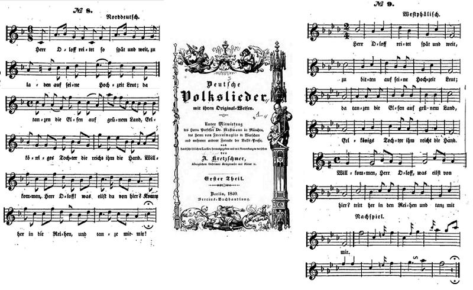
|
Herr Oloff - Norddeutsch "Grundtvig note que la traduction de Herder, "la fille du roi des aulnes" a tellement plu aux Allemands qu'ils ont fini par voir en elle une authentique ballade allemande: le "Wunderhorn" ('Cor magique de l'enfant', I, p.261, ed. 1806) la reproduit sous le titre de "Herr Olof" à partir d'une feuille volante. On la retrouve avec des modifications mineures chez in Zarnack's "Deutsche Volkslieder" (I, p. 29, 1819), puis chez Erlach et chez Richter et Marschner. A. Kretzschmer (1840) publie à son tour cette traduction, avec un mot changé ici et là, accompagné de deux mélodies: l'une d'"Allemagne du Nord" et l'autre de "Westphalie" ..." (Child I, p. 376) |
Herr Oloff - Westfälisch "Grundtvig remarks that Herder's translation "Erlkönigs Tochter" took so well with the Germans that at last it came to pass for an original German ballad: the "Wunderhorn" (I, p.261, ed. 1806) gives it with the title "Herr Olof" as from a flying sheet. It appears then with some little changes in Zarnack's "Deutsche Volkslieder" (I, p. 29, 1819), whence it passed into Erlach, then Richter and Marschner. A. Kretzschmer (1840) has the translation again, with a variation here and there, set to a "North-German" and a "Westphalian" air..." (Child I, p. 376) |
|
|
|
|
|
|
|
Les noms du hérosComme on le voit par ces exemples, de même que dans les domaines breton et français, dans le vaste domaine scandinave aussi le héros porte des noms divers: Sire Olaf/Olof/Oluf, Olaf Lilienkranz, Sire Pierre, Herrman, Prince/Duc Magnus...Le nom du héros des Îles Féroé mérite une attention particulière: la racine "riddar" (chevalier) pourrait avoir migré vers la Basse-Bretagne et être à l'origine des "Trador" et "Tudor" qu'on y relève, par dissimilation du t final du mot précédent "Kont"=comte. |
The hero's namesAs we see from these instances, not only in the Breton and French speaking areas, but also in the vast Scandinavian domain is the hero in the song kown by different names: Sir Olaf/Olof/Oluf, Olaf Lilienkranz, Sir Peter, Herrman, Prince/Duke Magnus...The hero's name in the Faroese ballad is especially remarkable: the root "riddar" (rider, knight) might have migrated to Low-Brittany and yielded the "Trador" and "Tudor" by dissimilation of the final "t" in the preceding word "kont"=Count. |
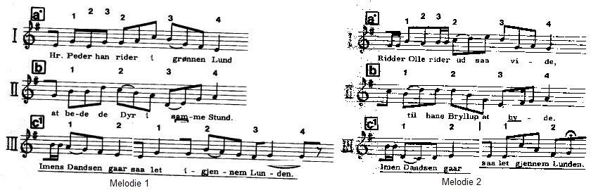
|
1. Hr. Peder han rider i grønnen Lund At bede de Dyr i samme Stund Imen s Dandsen gaar Saa let igjennem Lunden 1bis. Ridder Olle rider ud saa vide, Till hana Bryllup at byde (chanté par Mette Johanne Jensdatter femme de charron 1808-1885) 2. Og der han red ad vejen frem Der mødte han en elvekvind 3. "Og hør du Hr Peder! Hvad jeg beder dig: Vil du ikke traede en dans med mig?" |
1. Sire Pierre chevauche en la verte forêt A la poursuite des bêtes sauvages Tandis que la danse va Bon train à travers les taillis 1bis. Le chevalier Olle chevauche au loin, Pour inviter les hôtes à son mariage (chanté par Mette Johanne Jensdatter femme de charron 1808-1885) 2. Et il a parcouru bien du chemin Quand il rencontra la reine des elfes. 3. "Ecoute-moi, sire Pierre, écoute mon invite Ne viendras-tu pas danser avec moi?" |
1. Sir Peder rode in the green wood Hunting high game at the same time While the dance was spinning Speedily under the grove 1bis. Knight Olle is riding afar, His guests to his wedding to bide (sung by Mette Johanne Jensdatter a wheelwright's wife 1808-1885) 2. And he had ridden a long way When he encountered the queen of elves. 3. "Hark, sir Peter, what I bid ye: Won't you dismount and dance with me?" |
Ballade populaire et mythologie scandinaveLes elfes des contes scandinaves sont sans doute les cousins des Albes dont parlent les deux Eddas en langue norroise (vieil islandais), la cosmogonie antique incluse dans le manuel de Poétique (ou "Edda de Snorri") de Snorri Sturluson (mort en 1241) et le 'Codex Regius' (ou "Edda Poétique") datant de la fin du 13ème siècle et découvert par l'évêque Sveinsson en 1643. On sait que certains de ces poèmes existaient déjà vers 850. La localisation de leurs diverses origines dans le domaine germanique s'avère impossible. Le système métaphorique qui préside à ces compositions est évoqué à propos du chant Helgi et Sigrun tiré de l'Edda Poétique.En passant de la mythologie au domaine des contes, les elfes ont changé de nature. Chez Snorri, "àlfar" désigne deux catégories d'êtres surnaturels: les "elfes noirs" habitent un monde souterrain (Svartàlfheim) et les "elfes lumineux" habitent un endroit du ciel appelé "Alfheim". Dans l'Edda poétique ils sont souvent nommés en même temps que les dieux principaux, les Ases (Aesir). On peut donc supposer qu'il s'agissait de dieux inférieurs, distincts d'une catégorie intermédiaire, les "Vanes". Cette distinction apparaît en particulier dans le poème "Alvissmàl" (le dit de l'Omniscient). A ces dieux s'ajoutent, outre les hommes qui vivent sur terre, les nains (dvergar) qui vivent sous terre -et ne supportent pas la lumière- et les géants (jötnar, risar, thursar) dont on ne sait pas trop où ils habitent. Le même poème nomme aussi les "ginregin"(puissances suprêmes=un autre nom pour les Ases?) et les habitants de Hel (qui est à la fois le nom d'une femme et le lieu qui désigne l'enfer dans les langues germaniques). Dans le "Ring" de Wagner, les Albes comme chez Snorri se répartissent en deux groupes: Les Albes devenus "elfes" vont occuper, dans le domaine germanique, tout comme les parques devenues "fées" (fatum=destin) dans le domaine roman, la place autrefois dévolue aux nymphes et autres divinités inférieures. Tandis que les elfes sombres sont confondus avec les nains, qui sont tantôt des auxiliaires, tantôt des ennemis des hommes, l'Eglise s'attachera à désinvestir les elfes lumineux du capital de sympathie dont ils jouissaient (ils entraient dans la composition de certains noms, tels qu'Alfred, "celui qui est conseillé par les Elfes"): |
Folk ballad and Scandinavian mythologyThe elves in the Scandinavian tales are certainly akin to the Albs referred to in the two Eddas in old Icelandic language, the ancient Cosmogony included in the manual of poetics by Snorri Sturluson (who died in 1241) known as "Snorri's Edda", and the late thirteenth century "Codex Regius" (or "Poetic Edda") discovered in 1643 by Bishop Sveinsson. We know that some of these poems already existed ca 850. Locating their individual origins within the Germanic domain proves impossible.The poetic system based on metaphors used for composing these poems is addressed in connection with the song Helgi and Sigrun in the Poetic Edda. When they left the old Norse mythology the Elves acquired a new nature. In Snorri's book "àlfar" refers to two kinds of supernatural beings: the "dark elves" who dwell below ground (Svartàlfheim) and the "light elves" who inhabit a place in heaven named "Alfheim". In the Poetic Edda they often are quoted along with the main gods, the Ases (Aesir). Therefore we may assume that they were considered inferior gods, also distinct from a third kind, the Vanes (Vanir). These three kinds of gods are listed in the "Alvissmàl' poem ("The sayings of All-Wise). In addition to these gods, the world harbours, beside the men who live upon the earth, the dwarves (dvergar) who live underneath it - and cannot thole light - and the giants (jötnar, risar, thursar) whose homeland is somewhere else. The same poem also mentions "ginregin" (supreme rulers=another name for the Ases?) and denizens of Hel (=hell, both a place name and a female figure). In Wagner's "Ring", as in Snorri's Edda, the Elves are distributed into two categories: Once the àlfar had become "elves" they were to replace in the whole Germanic area the nymphs and lesser deities inherited from the Greco-Latin mythology, as did the Parcae who had become "fatae" (fairies) in the Romance area. Whilst the dark elves were to merge with the dwarves to now benevolent auxiliaries, now malignant opponent of men, Church became anxious to deprive the light-elves of the favourable bias they still enjoyed (for instance their name is an element of the compound "Alfred"= advised by the Elves): |
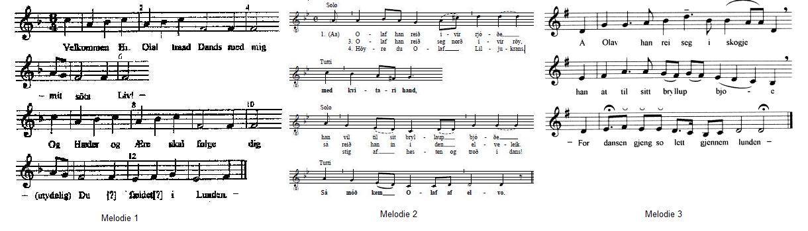
|
I Velkommen Hr. Olaf! Traad dands med mig! - Mit söta Liv! - Og Haeder og Aere skal følge dig - (Utydelig) Du faeldet i Lunden. - II 1. Olaf han reið ivir rjóðe Med kvitari hand Han vil tilsit bryllaup bjóðe Sá móð kem Olaf af elvo. 2. Olaf han reið seg nord ivir röy sá reið han in i den elveleik. 3. Höyre du Olaf Liljukrans, Stig af hesten og troð i dans! III A Olav han rei seg i skogje Han at til sitt bryllup bjoe -For dansen gjeng so lett gjennem lunden - |
I Bienvenue, Sire Olaf, Viens danser avec moi! - Ma douce vie, - Et tu en tireras richesse et gloire - (indistinct) Tu m'as quitté dans ce bosquet! II 1. Olaf chevauchait par les landes - J'en mettrai ma main au feu - Il voulait inviter à ces noces beaucoup de gens - Olaf, que tu rencontreras les elfes. - 2. Olaf a chevauché vers le nord toujours tout droit Ainsi est-il arrivé au pays des elfes. 3. "Ecoute, Olaf Lilienkranz, Descend de ton cheval et entre dans la danse!" III Olaf est parti sur son cheval Inviter ses hôtes à sa noce - Voyez comme la danse est légère à travers le bosquet! - |
I Welcome, Sir Olaf, come dance with me! - My sweet life, - And wealth and honour shall be yours! - (indistinct) you gave me up in that grove! II 1. Olaf rode: an everlasting ride! - I would bet my hand on it - He wanted to bide lots of people to his wedding - Olaf, that you will come across elves - 2. Olaf rode north straight ahead And he rode into the Elfland. 3. "Hark, Olaf Lilienkranz, Dismount from your dun and join us the dance!" III Olaf rode away on his charger To bide people to his wedding - For the dance was so light under the grove! - |
Des airs à danserL'air qui accompagne le présent poème est de toute évidence un air à danser, en l'occurrence un genre de valse. Il en va de même de toutes les mélodies sur lesquelles on chante les ballades nordiques. La danse est, chez les peuples du nord, la principale distraction. Cependant ils n'ont pas recours à la musique instrumentale: ils dansent tout en chantant. Comme l'indique R.C.A. Prior dans la Préface de ses "Ancient Danish Ballads" states:"L'objet du chant n'est pas seulement de régler les pas, mais aussi d'éveiller certaines émotions liées à ce qu'il raconte. On devine à la mimique des danseurs que, loin d'être indifférents à ce que raconte le chant, ils s'efforcent par l'expression de leur visage et leurs gestes d'exprimer ce qu'il contient...La plupart de [ces chants] sont assez longs et pourtant, jamais ils ne sont consignés par écrit, mais toujours appris par cur... Il remarque en outre que les danses chantées étaient en usage en Espagne aussi, à telle enseigne que l'on trouve chez Cervantès, dans les "Nouvelles exemplaires" la phrase: "Quando la oyeron cantar por ser la dansa cantada" (Quand ils l'entendirent chanter, puisque la danse était chantée...").; et que le mot "ballade" contient la racine "bal". Comme il est dit à la page que ce site consacre à la musique bretonne, les danses bretonnes peuvent être chantées, elles aussi, en particulier en utilisant le procédé "kan ha diskan". A la strophe 4, l'elfe dédaignée donne le choix à Olof entre mourir le lendemain ou souffrir pendant sept ans. Ce choix s'offre au héros dans 5 autres versions danoises et féroienne C'est à ce même dilemme qu'est confronté le héros dans la plupart des versions bretonnes de la ballade. |
Dancing airsThe musical vehicle of this poem is evidently a dancing air, in the present case a sort of waltz. So are all the tunes to which Nordic ballads are sung. Dance is the Nordic peoples' greatest amusement, whereby they use no instrumental music: they dance to the tunes they sing. As R.C.A. Prior in the Preface to his "Ancient Danish Ballads" states:"The object of the song is not only to regulate the steps but to awaken certain feelings by its meaning. One may see by the dancers' behaviour that they are not indifferent to the matter of the song, but with the countenances and gestures take pain to express the various meaning of it... Most of [these songs] are pretty long, yet they never are written down but retained in the memory..." He adds an apt remark to the effect that dancing songs were found in Spain too, since Cervantes writes in one of his "Novelas exemplares: "Quando la oyeron cantar por ser la dansa cantada" (When they heard her sing, as the dance was sung); and that the word "ballad" implies dancing. As stated on the page dedicated to Breton music at the present site, Breton dances may also be sung, in particular using the "kan ha diskan" (tiled song) system. In stanza 4, the dispised elf allows Olof to choose between dying the next day or wilting during seven years. This choice is offered to the hero in 5 Danish and Färoe versions. In most of the Breton versions of the ballad the hero is on the horns of the very same dilemma. |
TopologieDans la préface de ses "Anciennes Ballades danoises", page XXXIV, R.C.A. Prior écrit: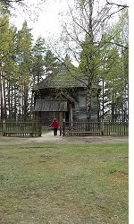 Il n'est pas facile de préciser quelle était la disposition des manoirs des seigneurs danois et même quelle idée nos chanteurs de ballade s'en faisait....Dans les traductions qui suivent, le Borgeled (suédois: "borgare-led") est présumé désigner le portail d'entrée de la propriété et c'est là que le visiteur était attendu par un membre de la famille qui l'accueillait et l'annonçait aux autres. C'est par ce portail qu'on pénétrait dans le Borgegaard (suédois: "gård"), l'enclos sur le pourtour duquel se dressaient les bâtiments détachés qui composaient le logis. Venait d'abord le manoir proprement dit ou Borg, flanqué de salles pour les dames et les domestiques, puis, dans d'autres parties de l'enclos, les écuries, la cuisine et la sten-stue (la salle de pierre) pour les femmes en couches. On adoptait ce système de bâtiments séparés dans tous les pays où le matériau de construction est le bois, pour éviter la destruction de la totalité du manoir par le feu, comme c'eût été le cas si les composants avaient été contigus. C'est dans cet enclos que s'ébattent les pages, que s'entraînent les cavaliers et que se déroulent maintes échauffourées et joutes verbales. Depuis ce Borgegaard (enclos du manoir) le visiteur entre par la porte en soulevant, en passant, la tenture écarlate (ici "sparlakan röd")... 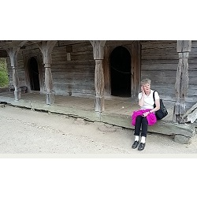 Souvent on le voit monter l'escalier pour accéder au Höielofts bro, au gynécée au premier étage. La Stue (salle de banquet ou de mess) où le maître des lieux prenait place avec ses hommes autour de la breden Bord, la large table, occupait, semble-t-il le rez-de-chaussée.On ne sait trop où la famille dormait. On voit souvent un jeune homme se réveiller et raconter son rêve à sa mère, laquelle, dirait-on, dormait dans la même chambre. D'autres fois, les chambres semblent séparées et réparties dans plusieurs bâtiments. C'était certainement le cas de la chambre nuptiale, la Brude huset. La Svaleoù souvent l'on nous montre la famille réunie, est une terrasse surélevée de 40 cm qui fait le tour de la maison qui la surmonte. Le Rosenlund où se déroulent tant d'aventures, pourrait avoir été à l'origine un petit parc, "en lille Dyrehave", situé entre le portail d'entrée et le manoir et tirer son nom des "boutons de roses", les jeunes dames qui le fréquentaient... Mais dans la plupart des cas, c'était un bois de petits arbres et de taillis que l'on pouvait traverser à cheval, par opposition à une dense forêt de haute futaie: Herr Tönne rider I Rosenlund At bede den wilde Hind. Der mödte han Dvergens Datter Hun hviler sig under en Lind. Un petit parc entre le portail de l'enclos et le manoir n'aurait certainement pas été l'endroit idéal pour chasser, pour rencontrer une Elfe (ou un chevreuil). |
TopologyIn the preface to his "Ancient Danish Ballads", on page XXXIV, R.C.A. Prior writes: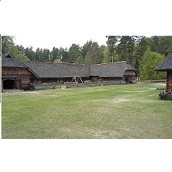 What was the arrangement of the dwellings of men of rank in Denmark at this period , it is not very easy to ascertain, or what our ballad-singers supposed it to be.In the following translations the Borgeled is assumed to be the entrance gate to the premises and here the visitor usually found one of the family waiting to receive him and announce him. Through this he entered the Borgegaard or courtyard, around which were the several detached buildings of which the dwelling consisted. The manor house, or Borg stood in front, and rooms for the ladies and for the retainers at the side of it, and the stables, kitchen and sten-stue (stone room) for lying-in women, in other pats of the yard. Such a detached mode of building is general in all countries where wood is the material, from the danger of total destruction, if a fire broke out, and all were connected together. .. This yard is the playground of the pages and the exercise place of the troopers and the scene of many scuffles and scolding. 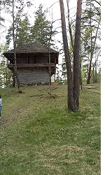 From this Borgegaard or courtyard the visitor approaches the door, drawing on his scarlet cloak as he crosses it He usually goes up the stairs, the Höielofts bro, to the ladies chamber, the Höieloft, on the first floor. The Stue (banquet-hall or mess-room) where the master sat with his troops over breden Bord, over the broad table, seems to have been underneath.Where the sleeping place of the family was, is not clear. From several passages where a young man wakes up and tells his dreams to his mother, it seems that they generally slept in one room. There are others where the chambers are described as separate and in a detached building. The bridal chamber certainly was so, and is often called brude huset, Bridal house. The Svale where the family is often represented as collected together I take to be a terrace elevated half a yard from the ground and running round the house with a penthouse over it. The Rosenlund which is the scene of so many adventures is supposed to have been originally a small park, en lille Dyrehave, between the entrance gate and the house, and to have had its name from the rosebuds, the young ladies who frequented it But in most cases, by rosenlund was understood a coppice of small trees and bushes , though which a horseman could ride, which distinguished it from a dense forest of timber tree: Herr Tönne rider I Rosenlund At bede den wilde Hind. Der mödte han Dvergens Datter Hun hviler sig under en Lind. A little park between the entrance gate and the house was not the place to ride hunting in or where he was likely to meet an Elfin maiden (or a forest hind)!" |
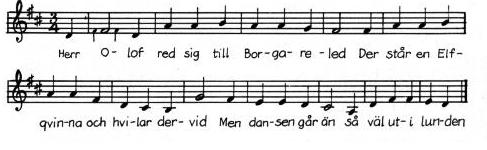
|
1. Herr Olof red sig till borgare-led, Der står en Elf-qvinna och hvilar dervid. Men dansen går än, så väl uti lunden. 2. Ack! hör du Herr Olof, hvad jag säger dig: Och lyster dig nu tråda dansen med mig? Men dansen etc. 3. "Och inte vill jag tråda dansen med dig" "I morgon så skall jag brudgumme bli." 4. Antingen vill du i sju år lida nöd. Eller så vill du i morgon bli död? 5. Herr Olof han kastar sin gångare omkring, Sjukdomar och plågor, de följde honom hem 6. Herr Olof han red till sin Moders gård, Och ute för honom hans Moder hon står. 7. "Och, kära min Moder! I bädden min säng," "Rätt aldrig så stiger jag upp utaf den." 8. Och bruden hon väntade i dagarne två; Och inte fick hon se sin käraste ändå. 9. Och bruden hon väntade i dagarne fem, Och inte fick hon se sin käraste än. 10. Och bruden sadlar sin gångare grå, Så rider hon sig till Herr Olofs gård. 11. När som hon kom till Herr Olofs gård, Ute för henne hennes Svärmoder står. 12. "God dag, god dag, kära Svärmoder min!" "Hvar är Herr Olof, fästman min?" 13. Jag har inte sett Herr Olof se'n i går, Han rider i skogen, skjuter hjort och rå, 14. "Och tager han mer på hjorten vara," "Än som han aktar den hela brudskara!" 15. "Och aktar han mera på hjort och hind," "Än som han aktar allrakärasten sin." 16. Och bruden hon viker på sparlakan röd, Så fick hon se, hvar Herr Olof låg död. 17. Och när det var dager och dager var ljus, Så var det tre lik i Herr Olofs hus. 18. Det första var Herr Olof, det andra hans mö, Det tredje var hans Moder, af sorgen blef hon död. Men dansen går än, så väl uti lunden. |
1. Sire Olof chevauche jusqu'au portail du manoir. Là se tient une elfe, adossée au pilier. Ainsi va la danse Parmi le bosquet! 2.- Ah, écoute donc, Sire Olof, ce que je te dis: N'as tu pas envie de venir danser avec moi? Ainsi va danse etc. 3. - Non, je ne veux pas danser avec toi" "C'est demain que je me marie." 4. - Veux-tu souffrir pendant sept ans, Ou bien mourir dès demain? - 5. Sire Olof fait faire demi-tour à sa monture Fléaux et maladies le suivent jusque chez lui. 6. Sire Olof a chevauché jusqu'à l'enclos de sa mère, Et là, sa mère l'attend. 7. - Oh ma chére mère, Faites-moi dresser un lit, Dont jamais plus je ne me relèverai.- 8. Et la fiancée a attendu deux jours Sans que son bien-aimé ne vienne la voir. 9. Et la fiancée a attendu cinq jours, Sans que son bien-aimé ne vienne la voir. 10. Et la fiancée a sellé son destrier gris, Et s'est rendue à l'enclos de son bien-aimé. 11. Quand elle arriva à l'enclos de sire Olof, Là, sa belle-mère l'attendait. 12. - Bonjour, bonjour, chère belle mère!" "Où est sire Olof, mon fiancé? 13. - Je ne l'ai pas vu depuis hier, Quand il est allé dans la forêt chasser le cerf ou le chevreuil. 14. - Est-ce qu'il se consacre d'avantage au cerf, Qu'aux invités venus à ses noces?" 15. Est-ce qu'il consacre d'avantage au cerf, Qu'à celle qui est sa bien-aimée? - 16. Et la fiancée soulève le rideau rouge, Et elle a pu voir que là Sire Olof gisait mort. 17. Et quand il fit jour et que le soleil se leva, Il y avait trois cadavres dans la maison de Sire Olof. 18. Celui de sire Olof, puis celui de sa fiancée, Le troisième était celui de sa mère, morte de chagrin. Ainsi va la danse, Parmi le bosquet! |
1. Sir Olof rides to the entrance of the manor There an elf-maid stands leaning against the post. See how they dance Amidst the coppice! 2. - O, don't you hear, Sir Olof, what I say to you? Don't you want to come and dance with me? See how they dance etc. 3. - No, I don't want to come and dance with you" "For tomorrow is my wedding day. 4. - Do you want to suffer during seven long years. Or to die tomorrow morning? - 5. Sir Olof makes his horse turn around Scourge and sickness see him home. 6. Sir Olof rode to his mother's courtyard, She was waiting for him on the threshold. 7. - O, my dear mother, in a bed have me laid" From which I never shall rise again. - 8. And his bride waited two days Without having any news of his beloved one. 9. And his bride waited another five days, Without having any news of his beloved one. 10. And the bride saddled her grey palfrey, And she rode out to Sir Olof's courtyard. 11. When she came to Sir Olof's courtyard, Outside stood, waiting for her, her mother-in-law. 12. - Good day, good day, my dear "Swearmother"! Where is Sir Olof my fiancé? 13. - I have not seen Sir Olof since yesterday, When he rode out to hunt red stag or roe deer. 14. - Does he devote more time to stags, Than to preparing his wedding? 15. More time to red stags and roe deers, Than to his most beloved one? - 16. And the bride lifted the crimson curtain. And she saw: there, Sir Olof laid dead. 17. And when the sun rose and it was daylight, There were three corpses in Sir Olof's house. 18. The first was sir Olof, the other was the maid, The third was his mother, who was dead of sorrow. See how they dance, Amidst the coppice! |
Origine franco-normande des ballades scandinavesOn lira à propos du chant breton Sire Nann deux théories prétendant expliquer les similitudes constatées entre celui-ci et ses pendants français et scandinave. La Villemarqué conclut à l'antériorité de la ballade bretonne qui, dit-il, "a passé en France où on appelle [le héros] Renaud..." (BB. 1867, p.27)Dans son "Romancero populaire de la France", George Doncieux indique, quant à lui, que "La gwerz, dans la série de ces trois chants ayant une moitié commune avec la complainte française et tenant par l'autre à la "vise" danoise forme le chaînon intermédiaire." R.C.A. Prior dans ses "Ancient Danish Ballads" (1860) voit l'origine des vises scandinaves au 13ème siècle, à la cour des rois normands d'Angleterre et à celle du roi de France. En effet selon lui: On a soutenu que ces fictions ont leur source première en Bretagne et au Pays de Galles, comme le fait La Villemarqué en citant Marie de France qui assigne à ses Lais une telle origine. R.C.A. Prior balaye cet argument en disant que c'était le genre du roman courtois qui exigeait de "situer l'action le plus loin possible, pour que le poète puisse donner libre cours à son imagination." On pouvait imputer à un roi Arthur breton, dont personne ne savait rien, n'importe quelles aventures. Il omet cependant de mentionner comme le fait L. Fleuriot dans "Lais bretons" (in "Histoire littéraire et culturelle de la Bretagne", Paris-Genève, Champion-Slatkine, 1987, t.1 ch. 5, p.131) que le "Livre des Lais" (Lioda bok) de Frère Robert, indiquait dans le prologue qu'il s'agissait d'histoires composées par des poètes de "Bretagne du Sud, un pays situé en France" (cité par Donatien Laurent dans l'article déjà mentionné, qui se demande si "Aotroù Nann" n'était pas un de ces lais). |
Franco-Norman origin of the Scandinavian balladsIn connection with Sir Nann two theories are submitted to explain the similarities between this Breton ballad and its French and Scandinavian counterparts. La Villemarqué's conclusion is that the Breton ballad was first composed and "migrated then to France where [the hero's] name was changed to 'Renaud'..." (BB. 1867, p.27).On the other hand, in his "Romancero populaire de la France", George Doncieux states that "the gwerz having in common with the French lament its second half and with the Danish 'vise' its first half is the middle link between the other two." R.C.A. Prior in his "Ancient Danish Ballads" (1860) suggests that the Scandinavian viser have originated in the 13th century at the courts of the Norman and French kings. In support of this view he states: Some critics have maintained that these fictions primarily have sprung from Brittany and Wales, as did La Villemarqué when he referred to Marie de France who ascribed this origin to her own works. R.C.A. Prior sweeps away this argument, asserting that it was the habit of the authors of courtly romances "to place their action as far off as possible in order to allow themselves free scope to their imagination". One could ascribe to the Breton king Arthur, of whom nothing definite was known, anything he pleased. However he omits to mention, as does L. Fleuriot in "Lais bretons" (in "Histoire littéraire et culturelle de la Bretagne", Paris-Geneva, Champion-Slatkine, 1987, t.1 ch. 5, p.131) that Brother Robert's "Lay book" (Lioda bok), stated in the preface that it included stories composed by poets from "Southern Brittany which is part of France" (quoted by Donatien Laurent in the afore-mentioned article, where he wonders if "Aotroù Nann" could not have been one of these lays). To translate the plain language of the Scandinavian ballads, a too academic language must be given up. R. Jamieson (1780 - 1844) with his Scots dialect translations certainly investigated an interesting way of solving this dilemma (cf. Aage and Elsie). |
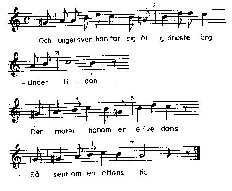
|
1. Ungersven han far sig åt grönaste äng - Unter lidan - Der möter honom en efvedans - Sent om en aftons tid. 2. Och vill du nu gå i elfdans med mig Så skall jag gifva dig det röda gull skrin. 3. Och inte vill jag uti elfvedansen gå med dig Och inte vill jag hafva det röda gull skrin 4. Ack, huru skall iag kunna uti elfvedansen gå I morgon så skall mitt bröllop bli åf. 5. Ack, huru skall iag kunna uti elfvedansen gå? I mörjon så skall mitt brudgumme stå. 6. Ja vill inte du uti elfdansen gå Och aldrig så skall du brudgumme stå 7. Och ungersven han svingar sin häst omkring En sjuker ungersven der rider han hem 8. Och kära min syster du bädda min säng Och kära min broder, du släpp min häst i äng. 9 Och kara min moder, J sitten mig näst! Och kära min fader, J hemten mig en prest! 10 Och kära min broder, släpp min häst uti äng! Och sedan så hemten mig Liten Kerstin i qvåll! 11. Och Herrmans moder hon sade så: Hvad är det för en fru, som kommer på vår gård Med rödan gullkrona och utslaget hår? 12. Då är fälle det lilla Kerstin så snäll Och kära min Moder, I fägnen henne väl 13. - Jag fägna nu henne hvarken illa eller väl Och når Herrman får stå up och fägna henne sjelf. 14. Och Herrmans moder hon sade så: De dö inte alla som suttorna få 15. Liten Kerstin in genom dörren steg: Och Herrman mot henne med ögonen neg. 16. Och Herrman gaf henne det röda gullskrin, Ja der var många lokator uti. 17. Och Herrman gaf henne en gullkrona röd Ja, den skall du bära efter min död. 18. Och Herrman gaf henne en klädning af gull, Ja, den skall du bära, när jag läggs i mull. 19. Och Herrmans moder hon sade så: Skänk något åt dina syskon små! 20. Mina syskon de har båd' änkesäng. Men liten Kerstin skall bädda enkesäng. 21. Liten Kerstin hon lade sin hand under kind - Under lidan - Den sötaste sömm han sommade in - Sent om en aftons tid.- |
1. Le jeune homme est allé par les vertes praires - Dans la souffrance- Et il a rencontré des elfes qui dansaient. - Tard, bien tard dans le soir-. 2. - Si tu veux bien te joindre à moi dans cette ronde Cette cassette d'or rouge je t'offrirai. 3. - Je ne veux te rejoindre en la ronde des elfes, Pas plus que je ne veux de ton coffret doré. 4. Comment pourrai-je donc danser avec les elfes Alors que c'est demain que je dois me marier? 5. Comment pourrai-je donc danser avec les elfes Et demain par les liens du mariage être uni?. 6.- Eh bien, si tu ne veux danser avec les elfes, Jamais les liens du mariage ne t'uniront. - 7. Il fit faire alors demi-tour à sa monture Et, malade, chez lui repart au grand galop. 8. - Ma chère sur, veuillez me préparer mon lit! Cher frère, conduisez mon cheval sur le pré! [1] 9 - Ma chère mère, asseyez-vous tout près de moi! - Mon père, je vous prie de me quérir un prêtre! 10 - Mon cher frère, tirez mon cheval hors du pré, Et allez me chercher Christine, dès ce soir! - 11. Un peu plus tard la mère d'Herrman s'est enquise: - Quelle est cette dame que je vois dans la cour, Portant couronne d'or et chevelure éparse? 12. - Si c'est Christine, ma charmante demoiselle, Ma chère mère, il faut que vous l'accueilliez bien. 13. - Je ne la recevrai ma foi, ni mal, ni bien - Il faut qu'Herrman se lève et l'accueille lui-même. - 14. Et la mère d'Herrman alors a déclaré: "On peut tomber malade et ne pas en mourir". 15. A ce moment Christine franchissait la porte: Herrman alors vers elle abaissa son regard. 16. Et Herrman lui donna la cassette d'or rouge, Laquelle débordait d'un précieux contenu. 17. Et Herrman lui donna la couronne d'or rouge En disant: "Vous la porterez après ma mort." 18. Herrman lui donne encore une robe dorée, "Vous la porterez quand ils m'auront enterré." 19. Et la mère d'Herrman prit la parole et dit: "Mais à tes frère et sur, ne donneras-tu rien?"! 20. - Mes frère et sur auront mes champs et mes prairies. Ma petite Christine, hélas, un lit de veuve. 21. Christine mit la main de son ami alors contre sa joue, - Dans la souffrance- Puis il s'est endormi du plus doux des sommeils. - Tard, bien tard dans le soir - [1] La strophe 8 est citée dans les notes du Barzhaz 1839 et 1845. |
1. The young swain went afar on the greenest lea - In suffering- He encountered a dancing party of elves. - Late in the evening-. 2. - If you care to join me in the dance of the elves I shall give you this red gold casket. 3. - I don't want to join you in the dance of the elves, Nor do I want to have the red gold casket. 4. Why! I should go and dance with the elves And tomorrow go and plight my troth? 5. Why! I should go and dance with you today And tomorrow act the faithful bridegroom?. 6.- Now, if you don't want to dance with the elves, Never shall you act the bridegroom, faithful or not. - 7. The young swain drove his charger around And sick, the young swain rode then home. 8. - My dear sister, make me a soft bed! My dear brother, take my horse to the mead! [1] 9 - My dear mother, sit down next to me! - And you, my dear father, fetch me a priest! 10 - My dear brother take my horse from the mead, And send someone to fetch Little Christel tonight! - 11. And thus quoth Herrmann's mother: - Who is this lady who enters our courtyard, With a red gold crown and loose hair? 12. - Now, she must be my beloved little Christel, Dear mother, I expect you to receive her well. 13. -I shall, my son, receive her neither ill nor well- You Herrman, get up and receive her in person! - 14. And Herrman's mother said this: "All those don't die whom sickness befall". 15. Little Christel was passing the threshold: Herrman greeted her with eyes filled with tears. 16. And Herrman gave her the red gold casket, That overbrimmed with jewels. 17. And Herrman gave her a red gold crown Saying: "You shall wear it after my death." 18. And Herrman gave her a gown of gold, Saying: "You shall wear it when I lie in the glebe" 19. And Herrman's mother quoth: "Have you no present for your younger siblings?"! 20. - My siblings they'll have both fields and leas. My little Christel shall bed all alone. 21. Little Christel has laid his hand under her cheek, - in sufferings- Presently he rested in softest slumber. - Late in the evening - |
Retour à la thèse de La VillemarquéDans la version des Îles Féroé qu'on va lire, le héros est appelé "riddar", chevalier. Comme le remarque R.C.A. Prior, les ballades ne mentionnent jamais "l'admission d'un jeune homme au rang de chevalier et elles ne furent certainement pas composées avant que les pratiques de la chevalerie soient tombées en désuétude."A propos du mot "Riddar", il convient de citer d'autres passages de l'allocution de Donatien Laurent déjà mentionnée à propos du chant "Elferskud". D. Laurent cite une version française recueillie en 1875 - et publiée dans la "Revue des Traditions populaires" en 1897 par Pitre de L'Isle du Dreneuc-, au Grand-Auverné, à 15 km au sud de Châteaubriant. Elle commence ainsi: Le comte Redor s'en va chasser Dans la forêt de Guéméné En son chemin a rencontré La Mort qui lui a parlé Veux-tu mourir dès aujourdhui ou dêtre sept ans à languir? Veux-tu mourir dès à présent ou dêtre sept ans languissant? Par ailleurs, il signale que le Nann du Barzhaz est diversement appelé dans les versions de Basse-Bretagne: Jozebig, Yannig, Comte de Besselon (car il est généralement "comte", jamais "roi", comme dans les versions françaises) et aussi Kont Tudor, Kont Trador, Kont Dredol, par exemple dans plusieurs versions de la collection de Penguern. Il existe, indique M. Laurent une version recueillie à Pont-Croix (près d'Audierne) qui nomme le héros Kont Riodor, le comte Riodor, "ce qui rappelle étrangement le titre danois du héros scandinave: Riadar Olav". Du coup la théorie de l'antériorité franco-normande chère à R.C.A. Prior ne semble plus aussi solide et l'on se demande si, au bout du compte, ce n'est pas, ici encore, le champion de la thèse bretonne, La Villemarqué, qui finalement avait raison...Il s'agit d'ailleurs d'antériorité par rapport aux versions françaises uniquement. Notons que, toujours selon le même article de Donatien Laurent, cet avis était celui du musicologue F.J. Child (1825-1896) dans "The English and Scottish popular ballads" qui signalait que "les ballades bretonnes conservent le récit sous une forme tout à fait apparentée à la plus ancienne version danoise" [Elferskud]. Cet avis était partagé par Svend Hersleb Grundtvig (1824 - 1883), dont le nom a été cité plus haut. Dans certaines des quatre ballades des ïles Féroé citées par Child, Olaf est clairement présenté comme ayant déjà fréquenté les Elfes. C'est pourquoi, on peut supposer qu'elles sont à l'origine des versions anglo-écossaises dont le héros est le "Clerc Colvill"... - Je pars courir la biche - Non, tu pars retrouver ta lamie. Ta chemise est blanche. Elle sera ensanglantée quand on te l'ôtera... - Il rencontre l'elfe occupée à tresser sa chevelure: -Inutile de te faire belle! Je dois quitter la compagnie des elfes: demain je me marie. - Dans ce cas tu seras un époux malade. Préfères-tu garder le lit longtemps ou être enterré dès demain?. - Elle lui apporte du poison. Il en boit et sa ceinture se déchire. - Embrasse-moi, dit-elle, avant de monter sur ton cheval.- Il se pencha vers elle et l'embrassa. Sa mère lui demanda s'il avait dansé avec les elfes pour être si pâle. - Oui, dit-il; il partit se coucher et mourut avant minuit. Sa mère et sa fiancée moururent aussitôt après. Comme pour la Bible et les Evangiles, le débat sur les origines de ce chant ne sera sans doute jamais tranché. Ce qui est incontestable, c'est que le mérite de l'avoir ouvert dès 1839 en en fournissant les éléments essentiels revient au jeune La Villemarqué. |
Back to La Villemarqué's theoryIn the Faeroese version below the hero is called "riddar", knight. As stated by R.C.A. Prior, the ballads never mention the "admission of a young man to the rank of a "ridder" or knight and it may be inferred that they were not composed till after the observances of chivalry were out of fashion and forgotten".Concerning the word "riddar", others excerpts from Donatien Laurent's speech should be quoted here (see song "Elferskud"). D. Laurent refers to the French ballad collected in 1875 -and published in "Revue des Traditions populaires" in 1897 by Pitre de L'Isle du Dreneuc-, at Grand-Auverné, 15 km south of Châteaubriant. It begins thus: Count Redor rides out to hunt In the woods of Guéméné On his way he encountered Death who spoke thus to him: Do you want to die today or to be languishing seven years? Do you want to die right now Or to be languishing away for seven years? Besides, he remarks that "Sir Nann" in the Barzhaz goes by all sorts of names in the versions of Lower-Brittany: Jozebig, Yannig, Count of Besselon (for he is, as a rule, a "count", never a "king" as in the French versions), as well as Kont Tudor, Kont Trador, Kont Dredol, for instance in several variants gathered by de Penguern. There is, as stated by D. Laurent, a version collected in Pont-Croix (near Audierne) where the hero is named Kont Riodor, Count Riodor, "which is strangely near the Danish title of the Scandinavian hero: Riadar Olaf"". So that the assumed Franco-Norman anteriority advocated by R.C.A. Prior becomes less solidly ascertained and we must make allowance, after all, for La Villemarqué's views, concerning the Breton and French versions only. It is remarkable that the same article by Donatien Laurent quotes the musicologist Francis James Child (1825-1896) who wrote in "The English and Scottish popular ballads" that «Breton ballads preserve the story in a form closely akin to the Scandinavian, and particularly to the oldest Danish version» [Elferskud]. This also was the opinion of the aforementioned Svend H. Grundtvig (1824 - 1883). In some of the four Färöe ballads quoted bY F-J. Child, Olaf is distinctly represented as having had previous acquaintance with the Elves. Therefore, we may assume that they are the origin of the Scottish and English "Clerk Colvill" versions... - I am going to course the hind - No, you are going to your leman. White is your shirt, but bloody shall it be when it is taken off... - He meets the elf who is braiding her hair: - I have not come a-wooing! I must quit the company of elves: tomorrow is my bridal. - Then a sick bridegroom you shall be. Would you rather be in a sick bed or go to the mould tomorrow? - She brings him a drink with an atter-corn. At the first draught, his belt bursts. - Kiss me, she said, before you ride.- He leaned over and kissed her. His mother asked him why he was so pale as if he had been in an elf dance. - I have, he said and went to bed and was dead before midnight. His mother and his love died thereupon. As it is the case with Bible and Gospels, the debate about the origins of this song very likely will never come to a close. It is beyond discussion that it was young La Villemarqué who opened it, as early as 1839, whereby he provided the key elements to be considered. |
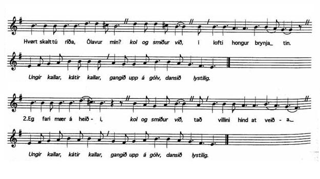
|
1. Hvørt skalt tú riða, Ólavur min? - kol og smiður við I lofti hongur brynja tin! - Ungur kallar, kátur kallar, gangið upp á gólv, dansið lystilig. - 2. - Eg fari maer á heiði stað villini hind at veiða. 7. Ólavur riður eftir bjørgunum fram Fann upp à eitt elvarrann. |
1. - Où donc galopes-tu, mon cher Olaf? - Charbon et forgeron le savent- En l'air ta cuirasse pend! - Appels juvéniles et cris joyeux Pied à terre! Viens danser avec grâce! - 2. - Je m'en vais par landes et bruyères Chasser le chevreuil farouche. - 7. Le chevalier Olaf en allant toujours plus loin A rencontré une ronde d'elfes. |
1. - Whither, whither my dear Olaf? - Coal and smith know that- In the air hangs your cuirass! - Juvenile calls and mirthful calls Dismount! Come dance deftly! - 2. - I ride over moor and heather I am hunting the wild hind. - 7. Knight Olaf, ever carrying ahead, Encountered a party of elves. |
|
Zum Schluss eines der bekanntesten Gedichte der deutschen Literatur, das Goethe verfasste, in Anlehnung an "Elferskud" bzw. "Erlkönigs Tochter", die dänische Ballade, die ihm durch die Übersetzung von Johann Gottfried Herder bekannt war. Der junge Kranke ist von einer übernatürlichen Welt umstrickt, die seinem rein vernünftig denkenden Vater unzugänglich bleibt. Unglücklicherweise bewahrheitet sich was der visionäre, dichterisch veranlagte Knabe ahnte. Dies wenigstens ist die Deutung der Sage, die einem zuerst einfällt, ist man eingedenk, dass der Verfasser seine Selbstgeschichte "Dichtung und Wahrheit" betitelte. Viele weitere, psychologische, sowie psycho-analytische Deutungen sind auch möglich, wenn's gefällig ist..." Und, wenn wir schon drüber sind, ganz, ganz zum Schluss, eine französische Adaptation von "Erlkönig" von Leconte de Lisle. |
Et voici pour finir, un des poèmes les plus fameux de la littérature allemande, inspiré à Goethe par "Elferskud", ou plus précisément par "Erlkönigs Tochter", la ballade danoise ci-dessus qu'il connaissait dans la traduction de Johann Gottfried Herder. Le jeune malade est en contact avec un monde surnaturel, tandis que son père est englué dans le rationnel. C'est malheureusement l'enfant visionnaire et poète qui aura raison... Ceci, du moins, est l'interprétation qui vient d'abord à l'esprit, concernant un auteur qui intitula son autobiographie "Dichtung und Wahrheit" (Poésie et réalité). Cependant, il en existe bien d'autres, psychologiques, voire psychanalytiques à souhait... Et pour finir, complètement, une adaptation française du "Roi des Aulnes" par Leconte de Lisle! |
To conclude, here is one of the most famous poems in German literature, inspired to Goethe by "Elferskud". More precisely, Goethe's poem is based on "Erlkönigs Tochter", the ballad above as translated from the Danish by Johann Gottfried Herder. The sick boy is in touch with a supernatural world whereas his father is stuck in rationality. The unfortunate visionary poet-child is eventually proven right... This is at least the first interpretation one thinks of, bearing in mind that the author titled his autobiography "Dichtung und Wahrheit" (Poetry and Reality). But there are lots of other interpretations, drawing on psychology or psychoanalysis... The French poet Leconte de Lisle could not refrain from composing an Elfkönig of his own: "Les Elfes". |
|
1. Wer reitet so spät durch Nacht und Wind? Es ist der Vater mit seinem Kind. Er hat den Knaben wohl in dem Arm, Er fasst ihn sicher, er hält ihn warm. 2. Mein Sohn, was birgst du so bang dein Gesicht? Siehst Vater, du den Erlkönig nicht! Den Erlenkönig mit Kron und Schweif ? Mein Sohn, es ist ein Nebelstreif. 3. Du liebes Kind, komm geh mit mir! Gar schöne Spiele, spiel ich mit dir, Manch bunte Blumen sind an dem Strand, Meine Mutter hat manch gülden Gewand. 4. Mein Vater, mein Vater, und hörest du nicht, Was Erlenkönig mir leise verspricht? Sei ruhig, bleibe ruhig, mein Kind, In dürren Blättern säuselt der Wind. 5. Willst feiner Knabe du mit mir gehn? Meine Töchter sollen dich warten schön, Meine Töchter führen den nächtlichen Reihn, Und wiegen und tanzen und singen dich ein. 6. Mein Vater, mein Vater, und siehst du nicht dort Erlkönigs Töchter am düsteren Ort? Mein Sohn, mein Sohn, ich seh es genau, Es scheinen die alten Weiden so grau. 7. Ich liebe dich, mich reizt deine schöne Gestalt, Und bist du nicht willig, so brauch ich Gewalt! Mein Vater, mein Vater, jetzt fasst er mich an, Erlkönig hat mir ein Leids getan. 8. Dem Vater grausets, er reitet geschwind, Er hält in Armen das ächzende Kind, Erreicht den Hof mit Mühe und Not, In seinen Armen das Kind war tot. |
1. Qui passe à cheval, dans la nuit, le vent, Si tard? C'est le père avec son enfant. Il serre son fils dans son grand manteau, Pour le protéger, pour lui tenir chaud. 2. -As-tu peur mon fils? Pourquoi te cacher? -Le Roi des Aulnes, là, le vois-tu s'approcher? Le Roi, sa couronne, et sa traîne aussi! -C'est la brume, enfant, qui se tord ainsi. 3. -Viens, mon bel enfant, suis-moi, si tu veux, Je sais tant de jeux, de jeux merveilleux! Mille belles fleurs croissent sur nos bords, Ma mère a pour toi des vêtements d'or! 4. -Mon père, oh, mon père, tu n'entends donc pas Tout ce que le roi me promet tout bas? -Calme-toi, mon fils, sois tranquille, enfant : Dans les feuilles mortes murmure le vent. 5. -Viens, mon beau garçon, suis-moi loin, bien loin, Mes filles de toi sauront prendre soin, Mes filles, la nuit, qui dansent en rond, Pour toi chanteront et t'endormiront. 6. -Mon père, mon père, là tu dois les voir, Les filles du roi, dans ce coin tout noir! Je vois bien, ce sont seulement, mon fils Les ombres que font les vieux saules gris. 7. -Je t'aime, ta beauté me donne envie de toi, Viens, où je te prends de force avec moi! -Mon père, il m'a saisi, oh! mon père, il me prend! Le roi des Aulnes m'a fait du mal à présent. 8. Le père presse alors son cheval; il frémit, Il étreint dans ses bras le garçon qui gémit, Parvient au jardin, d'un ultime effort; L'enfant dans ses bras... l'enfant était mort. Traduction de Jean Malaplate tirée de "Ballades et autres poèmes" aux Editions Aubier, Domaine allemand bilingue. |
Who rides there so late through the night dark and drear? [1] The father it is, with his infant so dear; He holdeth the boy tightly clasp'd in his arm, He holdeth him safely, he keepeth him warm. "My son, wherefore seek'st thou thy face thus to hide?" "Look, father, the Alder King is close by our side! Dost see not the Alder King, with crown and with tail?" "My son, 'tis the mist rising over the plain." "Oh, come, thou dear infant! oh come thou with me! For many a game I will play there with thee; On my beach, lovely flowers their blossoms unfold, My mother shall grace thee with garments of gold." "My father, my father, and dost thou not hear The words that the Alder King now breathes in mine ear?" "Be calm, dearest child, thy fancy deceives; the wind is sighing through withering leaves." "Wilt go, then, dear infant, wilt go with me there? My daughters shall tend thee with sisterly care My daughters by night on the dance floor you lead, They'll cradle and rock thee, and sing thee to sleep." "My father, my father, and dost thou not see, How the Alder King is showing his daughters to me?" "My darling, my darling, I see it aright, 'Tis the aged grey willows deceiving thy sight." "I love thee, I'm charm'd by thy beauty, dear boy! And if thou aren't willing, then force I'll employ." "My father, my father, he seizes me fast, For sorely the Alder King has hurt me at last." The father now gallops, with terror half wild, He holds in his arms the shuddering child; He reaches his farmstead with toil and dread, The child in his arms lies motionless, dead. Anonymous translation retrieved in Wikipedia. |
|
Couronnés de thym et de marjolaine, Les Elfes joyeux dansent sur la plaine. Du sentier des bois aux daims familier, Sur un noir cheval, sort un chevalier. Son éperon d'or brille en la nuit brune ; Et, quand il traverse un ravon de lune, On voit resplendir, d'un reflet changeant, Sur sa chevelure un casque d'argent. Couronnés de thym et de marjolaine, Les Elfes joyeux dansent sur la plaine. Ils l'entourent tous d'un essaim léger Qui dans l'air muet semble voltiger. - Hardi chevalier, par la nuit sereine, Où vas-tu si tard ? dit la jeune Reine. De mauvais esprits hantent les forêts Viens danser plutôt sur les gazons frais. |
Couronnés de thym et de marjolaine, Les Elfes joyeux dansent sur la plaine. - Non ! ma fiancée aux yeux clairs et doux M'attend, et demain nous serons époux. Laissez-moi passer, Elfes des prairies, Qui foulez en rond les mousses fleuries ; Ne m'attardez pas loin de mon amour, Car voici déjà les lueurs du jour. Couronnés de thym et de marjolaine, Les Elfes joyeux dansent sur la plaine. - Reste, chevalier. Je te donnerai L'opale magique et l'anneau doré, Et, ce qui vaut mieux que gloire et fortune, Ma robe filée au clair de la lune. - Non ! dit-il. - Va donc ! - Et de son doigt blanc Elle touche au cur le guerrier tremblant. |
Couronnés de thym et de marjolaine, Les Elfes joyeux dansent sur la plaine. Et sous l'éperon le noir cheval part. Il court, il bondit et va sans retard ; Mais le chevalier frissonne et se penche ; Il voit sur la route une forme blanche Qui marche sans bruit et lui tend les bras : - Elfe, esprit, démon, ne m'arrête pas ! Couronnés de thym et de marjolaine, Les Elfes joyeux dansent sur la plaine. Ne m'arrête pas, fantôme odieux ! Je vais épouser ma belle aux doux yeux. - Ô mon cher époux, la tombe éternelle Sera notre lit de noce, dit-elle. Je suis morte ! - Et lui, la voyant ainsi, D'angoisse et d'amour tombe mort aussi. Couronnés de thym et de marjolaine, Les Elfes joyeux dansent sur la plaine. |